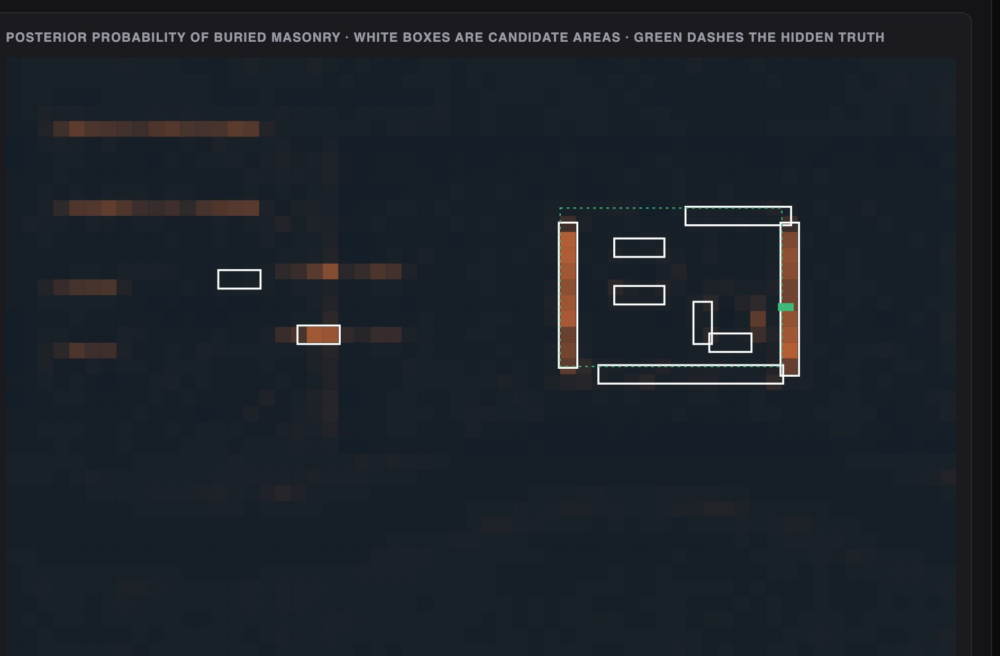
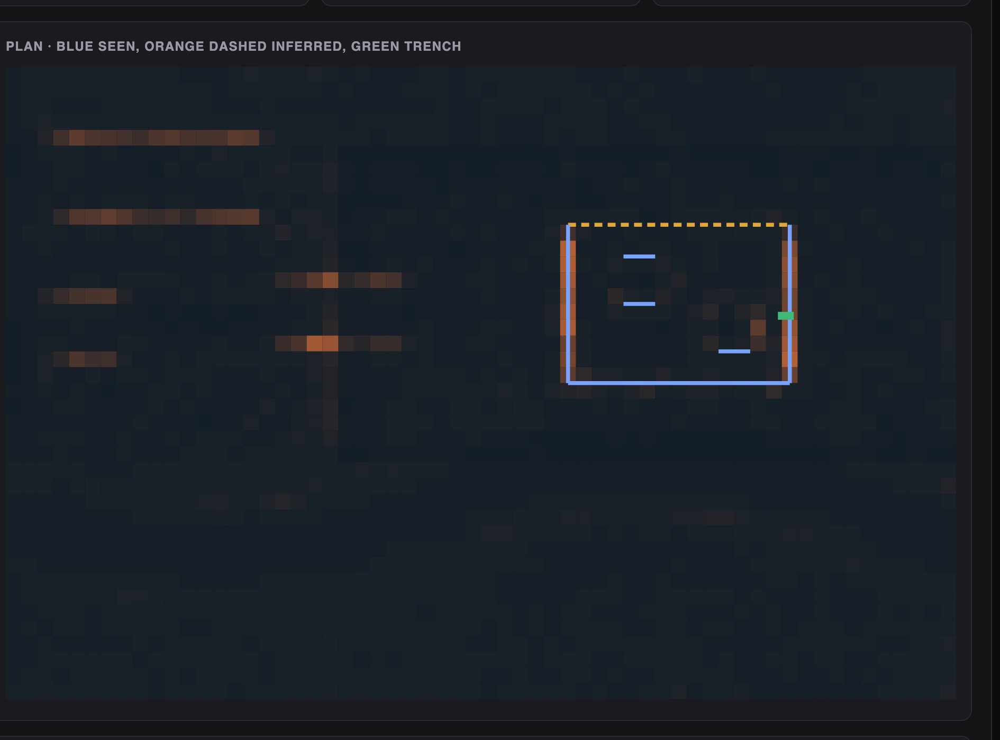

Python · Bayesian fusion · Archaeology · 2026-10
Two Surveys See It Faintly. Where Do You Dig?
A discovery system for a simulated valley: it fuses a LiDAR ground model and a crop-mark index into ranked candidate areas, so terraces that fool LiDAR vanish; records a trench with provenance; and builds two rival reconstructions with their assumptions. From the surveys alone the readings are close; the trench moves them to 73% against 11%.
Built from a written blueprint as one vertical slice. The valley is simulated: its surveys, buried site and trench come from a generator I wrote, which is what lets each candidate area and wall be checked against the truth. Buried walls are straight lines on a grid; real landscapes are not. No language model is used. Not built: real LiDAR or imagery, segmentation models, 3D meshes and tiles, Kafka, Terraform, single sign-on.
01 — The problem
Buried walls show faintly: a few centimetres of relief in a LiDAR model, a slightly paler strip in a ripening crop. Each signal alone is drowned by things that are not walls: old field terraces, stream banks, soil changes. Archaeologists weigh these by eye and then draw one reconstruction, which gets published as if it were seen. Can software combine weak signals transparently, say where to dig, and draw alternatives with their assumptions and confidence instead of one authoritative picture?
Blueprint 6 of fifteen in a third build book, built as its demo scenario end to end.
02 — What I built
A Python service on PostgreSQL with a background worker and a web page, started by one docker compose up.
- A simulator of a valley: terrain, a stream, terraces, a buried enclosure with buildings and a robbed-out wall, two surveys with noise, a trench.
- Detectors for microrelief and crop marks, each honest about where it can see.
- Bayesian fusion into ranked candidate areas with each survey's contribution.
- Excavation records with provenance and a knowledge graph.
- Two reconstructions with assumptions, confidences, and a clickable evidence chain per wall.
03 — How it was built
- 01
Masonry is linear; noise is not
Each survey is turned into a residual against a smoothed surface, in units of its own noise. A single cell two noise units high is nothing. The same cell as part of a five-cell straight run is something, so the residual is averaged along short lines in four directions and the best direction kept. Steep ground is masked in LiDAR, because stream banks are relief too; ground without crop is masked in the index, because there is nothing there to mark.
return np.max([ndimage.convolve(z, kk / length, mode="nearest") for kk in kernels], axis=0) - 02
Weak signals add up; a silent crop counts against
Per cell: prior odds of masonry times each survey's likelihood ratio, a Gaussian shifted by one noise unit, so a weak ridge adds a little and a strong one a lot. The terraces are strong in LiDAR and flat in the crop, and the crop's silence is evidence against them. In the demo, LiDAR alone raised 12 false areas and the index alone none; fused, 2 false and 72% of the masonry covered.
l1, l2 = np.log(likelihood_ratio(zl, 1.0)), np.where(has, np.log(likelihood_ratio(zs, 1.2)), 0.0) post = 1 / (1 + np.exp(-(lo + l1 + l2))) - 03
Where a sensor is blind, it must not vote
The first fusion treated no crop mark as evidence against masonry everywhere, and it worked beautifully: terraces and stream banks vanished. It was wrong, because outside the crop the index sees nothing either way. Fixing that brought back fourteen false areas a valley, all on the stream banks, which only LiDAR had ever judged. The honest fix was in LiDAR: mask steep ground and its neighbours. Fusion removes only what one sensor can positively contradict.
steep = ndimage.binary_dilation(np.hypot(gx, gy) > SLOPE_MAX, iterations=2) z[steep] = 0 - 04
Two readings, and the price of closing a circuit
The enclosure reading takes the pair of vertical and pair of horizontal lines with the most evidence on their sides and closes the rectangle; the lines inside are buildings. The field reading keeps the lines as boundaries and extends nothing. Confidence from the surveys is the mean posterior along each wall weighted by how much of it was seen; the enclosure pays 15% for the assumption that closes it. On twelve other valleys the field reading scored higher in eight, though the truth was an enclosure every time. The surveys do not decide; they are not meant to.
conf = float(np.mean([w_["mean_posterior"] * w_["share_seen"] for w_ in walls])) * 0.85 if walls else 0.0 - 05
The trench decides, and every wall says what it is
Trench TR1 finds a mortared wall two courses high where the enclosure reading drew its east wall, with a denarius of Hadrian in the collapse: built after AD 120. That raises the enclosure to 73% and drops the field reading to 11%, because a 0.9 m mortared wall is not a field boundary. Click any wall and it shows its cells, each survey's contribution, the trench across it, and whether it was seen or drawn: the north wall is 41% seen and says the rest is inference.
"uncertainty": "inferred: no survey evidence on most of this line; it is drawn because the hypothesis closes the circuit" if wl["inferred"] else "seen in the surveys"
04 — Results
The demo. The fused posterior with candidate areas in white and the hidden enclosure dashed in green:

The enclosure reading drawn over the posterior: blue where seen, orange dashed where inferred, the trench in green.

On twelve other simulated valleys:
| Fused | LiDAR alone | |
|---|---|---|
| False areas | 1.2 | 9.8 |
| Masonry covered | 55.7% | 67.3% |
| Rectangle recovered | 11 of 12 | – |
| Walls inferred | 2.1 of 4 | – |
| Enclosure favoured | 4 of 12 | – |
The index alone had 0 false areas and covered 53.1%: it was the stronger survey, and fusion added a few points of coverage for about one false area a valley. The last row counts valleys where the enclosure reading beat the field reading before any digging; the truth was an enclosure every time.
Honest limits. Fusion did not beat the better single survey by much; its work was removing the terraces. The confidence rules are hand-set constants, not calibrated probabilities. Walls are straight lines on a 10-metre grid and the surveys have Gaussian noise; real LiDAR has trees and drains, real crop marks depend on the season.
Checks. 12 tests, including: the generator buries what it says and leaves the gap in the north wall, each detector sees its own signal and LiDAR cannot tell walls from terraces, fusion finds the structure and not the terraces, the enclosure rectangle is recovered with the north wall inferred, a raster of the wrong shape or range is refused, a structure context needs a period, and one project cannot see another's site.
05 — What I'd do next
- Calibrate the confidence rules on generated valleys, so 70% means seven in ten.
- A real LiDAR tile from an open archive, to see what the detector makes of trees and drains.
- Procedural 3D from the walls, with each wall's opacity carrying its uncertainty.